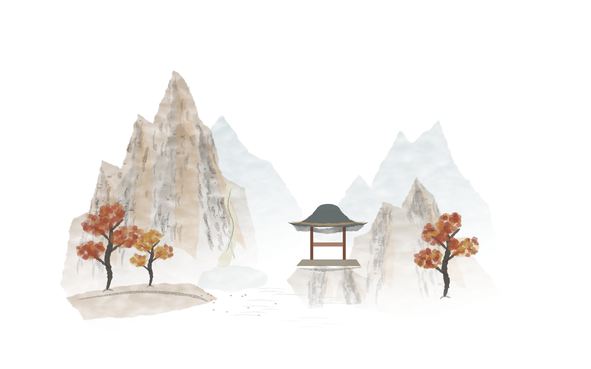
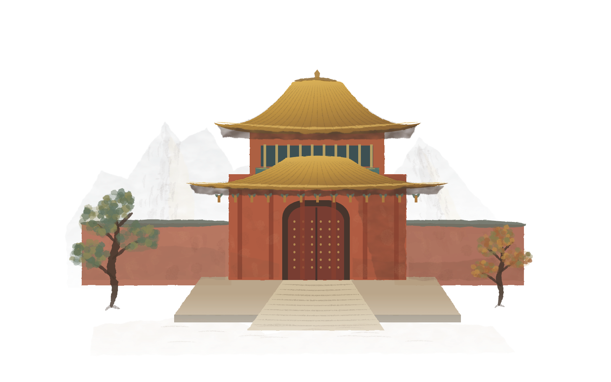
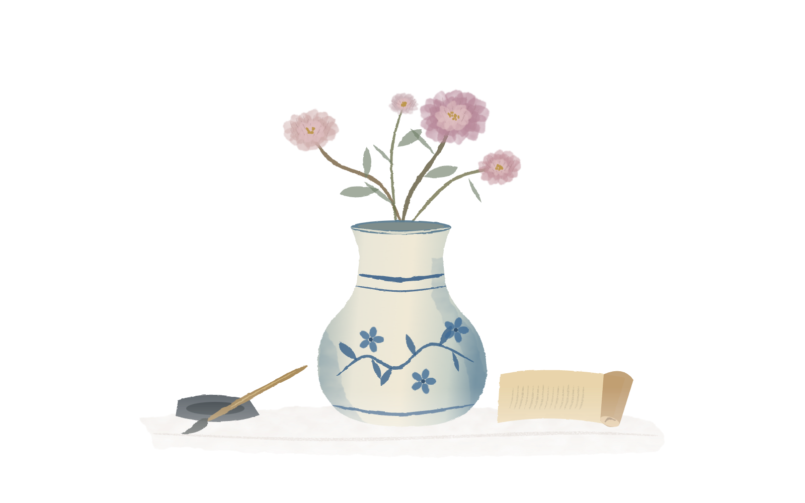
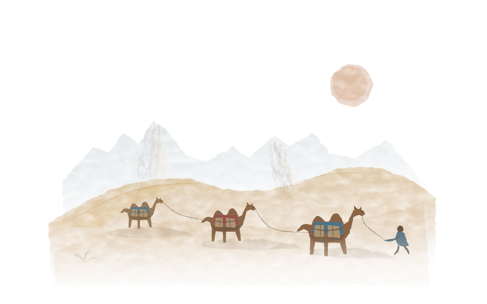

CHINESE COLORED INK · STUDIES 01—04
随物赋彩 · 彩墨四景
笔墨与留白定调，颜色随物、随境。
点击画面查看原图；SVG / PNG 均为 1600 × 1000 透明素材。

丹枫听瀑
赭石山骨 · 胭脂秋林 · 青灰飞瀑

朱门金阙
朱红墙身 · 金黄屋面 · 石青彩梁

青花案雅
钴蓝瓷器 · 藕紫牡丹 · 暖木书卷

沙海行旅
沙金大漠 · 驼棕商队 · 石蓝远山